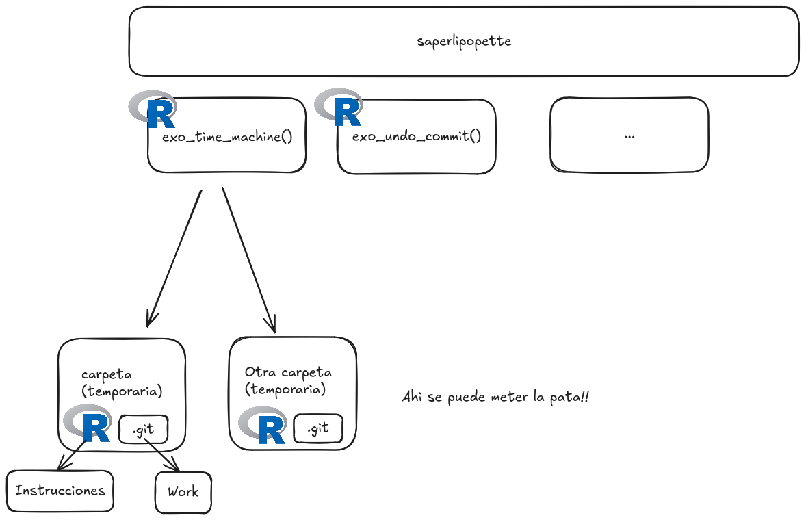

¡Miércoles, Git!
Maëlle Salmon https://miercoles-git-mejor.netlify.app/
Git es un Sistema de Control de Versión (VCS).
Git se [parece] más a un sistema de archivos miniatura con algunas herramientas tremendamente poderosas desarrolladas sobre él, que a un VCS [(sistema de control de versión)].
Después de confirmar [un commit] en Git es muy difícil perderla, especialmente si envías [esos cambios] a otro repositorio con regularidad.
📜 Historia que usar
🌳 Ramas
A veces duele. 😱
Podéis compartir cosas feas que os pasaron con Git?
A veces duele. 😱
💪 Prevenir algunos problemas
💪 Practicar cómo salir exitosamente de algunas situaciones horribles
En tu entorno de Git habitual.
Podéis escribir lo que es su forma de usar Git? Yo: Positron+terminal a veces.
Mostrar donde esta Git, la consola de R, la terminal.
Mostrar donde esta Git, la consola de R, la terminal.
usethis::git_sitrep()👀 Staging area
👀 Rama
👀 Remote (GitHub?) vs local (tu ordenador)
En carpetas temporarias creadas por saperlipopette.
Asi no rompemos nuestros proyectos importantes.
Una herramienta para usar Git
Un paquete R para crear ejercicios en carpetas propias.

R para crear el ejercicio en otra carpeta.
R en la nueva sesión para leer las instruciones.
Tus herramientas usuales para solucionar el problema de Git!
Llama una función desde una sesión R.
Va a la carpeta creada (se ve en el output).
Abre R en esta carpeta, lee las instrucciones.
Trabaja con tus herramientas para Git o la terminal.
Cierra la sesion de ejercicio.
Es difícil usar y salir de Vim…
Entonces mejor no entres!
Tienes 10 minutos para arreglarlo!
Haré demos y después las haréis también.
15 minutos para resolver estos ejercicios. 😈
15 minutos para resolver estos ejercicios. 😈
15 minutos para resolver estos ejercicios. 😈
Soluciónalo tu también en 10 minutos.
✨ .gitignore ✨
Creo carpeta-secreta/.
La veo en la staging area.
Añado carpeta-secreta a mi .gitignore.
No la veo más en la staging area.
usethis::git_vaccinate()
🚀 git push -f
Pero
🔥 no en ramas compartidas
🔥 no elimina completamente el commit antiguo en GitHub https://github.com/ropensci-training/saperlipopette/pull/26
¿Cómo sufrir menos con Git?
Prevenir problemas: saber donde estás, no usar Vim, usar .gitignore.
Aprender a salir de situaciones de miércoles.
¡Gracias! 💙 Gracias a Andrea Gomez Vargas, Ariana Bardauil y Yanina Bellini Saibene.
Book Git in Practice by Mike McQuaid (reading notes)
Book Pro Git by Scott Chacon (reading notes)
“What they forgot to teach you about R” now (E. David Aja) and then (Jenny Bryan, Shannon Pileggi).
Happy Git and GitHub for the useR by Jenny Bryan, the STAT 545 TAs, Jim Hester.
Julia Evans’ zines “Oh shit, Git!” and “How Git works”